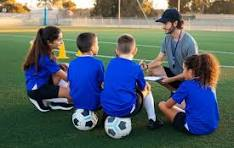
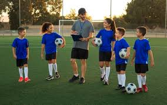
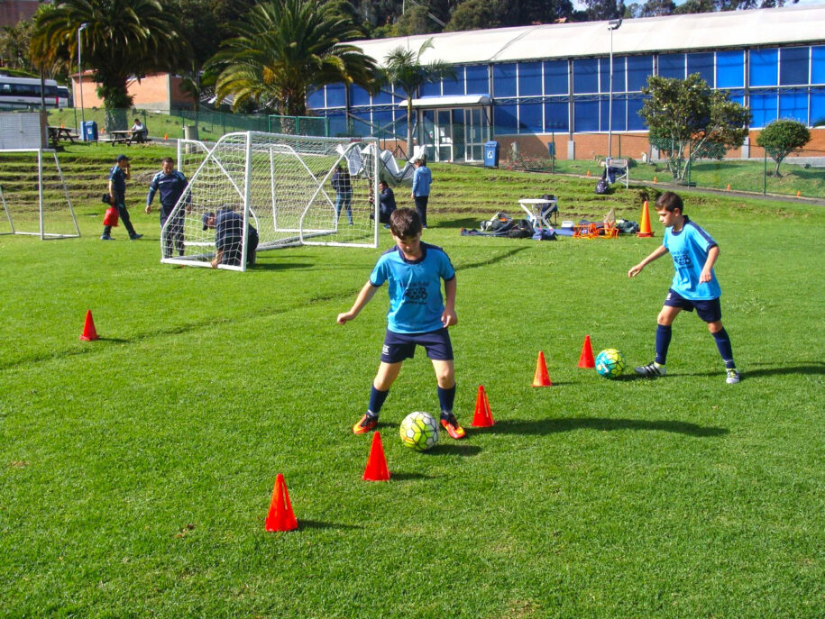
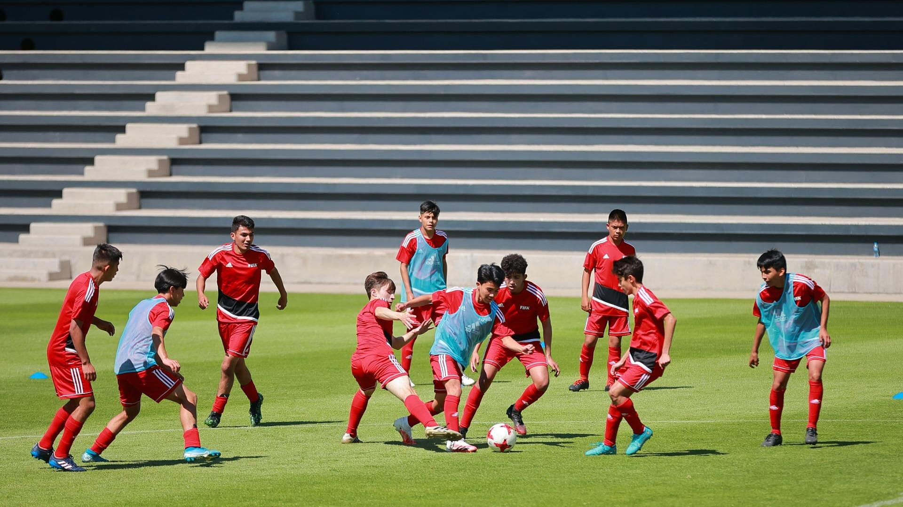
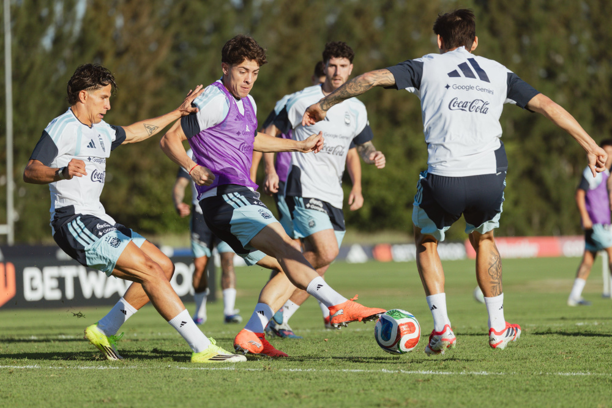

"Formando personas con. Integridad, Respeto y Disciplina enfocado en principios y valores Promoviendo el bienestar integral a través de la interacción social se "Aprende, Disfruta y se juega"
El talento depende de la inspiración, pero el esfuerzo depende de cada uno. Para jugar no se necesita mucho, solo la intención y las ganas de ser feliz.
informacion
La escuela de fútbol base ofrece una formación integral que combina el desarrollo social emocional y físico, priorizando la educación formativa como el compañerismo, esfuerzo, trabajo colaborativo, integridad entre muchas más, sobre la competicion. Un aprendizaje fundamental para crear las habilidades y destrezas, contamos con excelentes entrenadores capacitados en calidad humana, instalaciones adecuadas y una metodología progresiva adaptada a la edad del deportista

Clase entrenamiento
Calidad Premium
cortesia
Diversidad sin Barreras
Equidad Oportunidades
CalidadPuedes ser parte de esta familia del deporte y pertenecer al grupo social con identidad y convivencia permítanos compartir los lazos de amistad

Material de Apoyo
Varidad
Material para las Practicas "Categorias"
Sub-10
(Conocida a menudo como Benjamín) abarca a niños y niñas de 8 hasta 10 años, nacidos en
los dos años anteriores al año actual, enfocándose en el desarrollo motriz,
la coordinación y la iniciación técnica, más que en ganar partidos.
“O alevín en otros contextos” agrupa a niños y niñas de 10 y 11 años al 31 de diciembre
enfocada en lo formativo deportivo, marcando el paso de iniciación al desarrollo
competitivo el aprendizaje técnico-táctico, los valores deportivos y la diversió>
 “Enfoque y combinación de alta intensidad técnica con la táctica, aprovechando la
madurez física de la adolescencia, trabajos de conducción, pases filtrados, movilidad
con circuitos cambios de dirección, perfiles y definiciones rápidas, fintas,
visión de juego y demás.
 "Se enfoca en la intensidad, táctica avanzada y preparación física específica, "Fuerza,
agilidad, velocidad, resistencia, en los entrenamientos y juego oficiales, materiales como
conos, vallas, escaleras de agilidad, picas y petos, se trabajan circuitos técnico-tácticos
posesiones, finalización y presión en zonas reducidas.

Una metodología formativa y progresiva: Un plan de entrenamiento estructurado
enfocado en el desarrollo de habilidades técnicas (control, pase, regate, etc.)
y la comprensión del juego.
Sub-12
Sub-15
Sub-20
contactanos para mas informacion